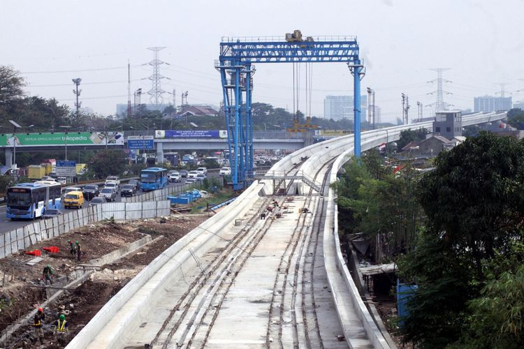

Bingungnya sesmen BUMN proyek LRT dikaitkan dengan meikarta
YOGA SUKMANA
KabarKabur.com - 25/09/2017, 22:30 WIB

Suasana pembangunan proyek kereta ringan atau (Light Rail Transit) di samping tol Jagorawi , Jakarta Timur, Kamis (7/9). Dalam pembangunan tahap pertama, akan ada tiga rute yang terhubung, yakni Cibubur-Cawang sepanjang 14,5 km, Bekasi Timur-Cawang sepanjang 17,1 km dan Cawang-Dukuh Atas sepanjang 10,5 km. Pada akhir tahun 2017, pembangunan proyek LRT ditarget akan mencapai 45 persen. ANTARA FOTO/Yulius Satria Wijaya/pras/17. ***Local Caption *** .(ANTARA FOTO/Yulius Satria Wijaya)
Sekretaris Menteri (Sesmen) BUMN Imam Apriyanto Putro menegaskan, proyek Light Rail Transit (LRT) Jabodebek tidak terkait dengan proyek milik Lippo Grup yaitu Meikarta.
Penyataan itu disampaikan Imam setelah ditanya oleh salah satu anggota Badan Anggaran (banggar) DPR terkait keterikatan proyek LRT Jabodebek dengan proyek Meikarta.
"Stasiun LRT Jabodebek yang paling ujung di timur adalah stasiun Bekasi Timur. Saya tahu karena saya tinggal di (Bekasi) timur, stasiun ini jauh dari proyek Meikarta," ujarnya saat rapat dengan Badan Anggaran DPR, Jakarta, Senin (25/9/2017).
"Saya juga terus terang tidak paham apabila Meikarta menghubungkan proyeknya dengan proyek LRT. Tetapi (saya pastikan), tidak ada hubungannya dengan LRT Jabodebek," sambung Imam.
Menurut dia, berdasarkan rencana saat ini, proyek LRT Jabodebek hanya sampai Bekasi Timur. Sementara ke arah barat, pembangunannya akan diteruskan hingga Bandara Internasional Soekarno-Hatta, Tangerang.
Imam juga angkat bicara terkait proyek Kereta Cepat Jakarta-Bandung. Meski proyeknya akan melalui wilayah Cikarang, namun tutur Imam, proyek tersebut juga tidak akan membuat stasiun di dekat proyek Meikarta.
"Kami juga tidak memiliki planning terkait stasiun di Meikarta untuk Kereta Cepat Jakarta-Bandung," ucap Imam.
Penulis :Yoga Sukmana
Editor : Muhammad Fajar Marta